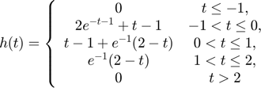

Objetivos de la Práctica
Métodos numéricos:Integración
Normalmente al realizar una integración hacemos uso del teorema fundamental del calculo en una de sus versiones, sin embargo hay ocasiones en las que resulta dificil o imposible encontrar una antiderivada, por ejemplo encontrar la antiderivada de . Una forma de dar solución a este tipo de problematicas es aproximar el area con polinomios, sustituyendo la función original por polinomios e integrando los mismos, lo que se conoce como metodos numéricos.
Formulas cerradas de Newton-Cotes: Se utilizan los polinomios de interpolación de Lagrange, de acuerdo a lagrange la función original es igual a un polinomio de grado n, que es un polinimio que va a coincidir con la función en determinados puntos más un termino de error.
, con y
formula cerrada de (n+1) puntos de Newton-Cotes
1.- Regla del trapecio (n=1)
2.- Regla de Simpson (n=2)
con
3.- Regla de tres octavos de Simpson (n=3)
con
Formulas cerradas de Newton-Cotes Compuestas: Es la extensión de las formulas anteriores, se divide el intervalo de integración en subintervalos, cada intervalo se trata de forma independiente y se le aplica la regla correspondiente manipulando el error, obteniendo las formulas siguientes.
1.- Regla compuesta del trapecio
Aproximacion:
con
2.- Regla compuesta de Simpson
Aproximacion:
con
Cuadratura Gaussiana: Se emplean los polinomios de Legendre para deducir los elementos de la cuadratura, la cuadratura trata de aproximar la integral por evaluaciones de la función en determinados puntos por determinadas constante con ciertas restricciones.
; 2n parámetros
Ejemplo:
Aproximación con regla del trapecio (n=1)
Aproximación con regla de Simpson (n=2)
Aproximación con regla de tres octavos de Simpson (n=3)
Aproximación con cuadratura Gaussiana
realice la convolución de la señal y la señal
clear; clc; f=@(t) exp(-t).*(heaviside(t)-heaviside(t-1)); g=@(t) t.*(heaviside(t+1)-heaviside(t-1)); c=@(t) (t<=-1).*(0)+((-1<t)&(t<=0)).*(2.*exp(-t-1)+t-1)+((0<t)&(t<=1)).*(t-1+(2-t).*exp(-1))+((1<t)&(t<=2)).*((2-t).*exp(-1))+(t>=2).*(0); lim=(-3:0.001:3); figure (65) subplot(2,1,1) plot(lim,f(lim)) axis ([lim(1) lim(end) -2.0 2.5]); title 'f(t)'; subplot(2,1,2) plot(lim,g(lim)) axis ([lim(1) lim(end) -2.0 2.5]); title 'g(t)'; convconm(f,g,c,-1,2.5,-2.5,2.5)

Se puede observar como la el resultado de la convolución (linea negra), se sobrepuso al resultado obtenido analíticamente (línea roja)
Realizar la auto correlación de la señal
clear; clc; syms t; x=@(t)heaviside(t)-2*heaviside(t-3)+heaviside(t-4); h=matlabFunction(x(-t)); c= @(t) (t<-4).*(0)+((-4<t)&(t<=-3)).*(-t-4)+((-3<t)&(t<=-1)).*(t+2)+((-1<t)&(t<=0)).*(3*t+4)+((0<t)&(t<=1)).*(-3*t+4)+((1<t)&(t<=3)).*... (-t+2)+((3<t)&(t<=4)).*(-4+t)+(4<t).*(0); lim=(-5:0.001:3); figure (123) subplot(2,1,1) plot(lim,x(lim)) axis ([lim(1) lim(end) -2.0 2.5]); title 'x(t)'; subplot(2,1,2) plot(lim,h(lim)) axis ([lim(1) lim(end) -2.0 2.5]); title 'x(-t)'; convconm(x,h,c,-2,4.5,-5,5)
Se puede observar como la el resultado de la convolución (linea negra), se sobrepuso al resultado obtenido analíticamente (línea roja)
Realice la simulación de la convolución de las señales (c) con (d) del problema 3.1.1 del Lathi.
clear; clc; figure (97) f= @(t) 3*t; nf=(-3:3); subplot(2,1,1) stem(nf,f(nf)); title 'f[n]' ng=(-3:3); g= [0 4 2 0 2 4 0]; subplot(2,1,2) stem(ng,g); title 'g[n]'
Realizamos la simulación:
convdisc([nf;f(nf)],[ng;g]);
Realice la simulación de la correlación de las señales (c) con (d) del problema 3.1.1 del Lathi.
clear; clc; figure(87); f= @(t) 3*t; nf=(-3:3); subplot(2,1,1) stem(nf,f(nf)); title 'f[n]' ng=(-3:3); g= [0 4 2 0 2 4 0]; subplot(2,1,2) stem(ng,g); title 'g[n]'
Podemos notar que la señal (d) es una señal par, entonces si la invertimos nos quedan las mismas alturas, entonces al hacer la correlación será lo mismo que el problema anterior.
Realizamos la simulación:
convdisc([nf;f(nf)],[ng;g]);
Realice la convolción de las señales c) con d) utilizando el comando conv de MATLAB
f= @(t) 3*t; nf=(-3:3); fn=f(nf); g= [0 4 2 0 2 4 0]; figure (254) stem((-6:6),conv(fn,g)) xlabel 'n' ylabel 'c[n]' title 'Convolución de las señales' grid on
Puede observarse que se obtienen los mismos resultados que los que se obtienen con el código de simulación.
Como apéndice insertaremos el código modificado de la función convconm, se incluyeron las variables inf como limite inferior en ele eje y, sup como limite superior del eje y, in como el inicio en x de la función y fin como fin de la convolución
function convconm(x,h,c,inf,sup,in,fin) figure (2) % Se crea una figura para hacer las gráficas dtau = 0.005; % Base de los rectangulos para realizar la integral tau = in:dtau:fin; % Intervalo de visualización del resultado ti = 0; % Indice para el vector de resultados tvec = in+.25:.1:fin-.25; % traslaciones de t, cuantas integrales se calulan y = NaN*zeros(1, length (tvec)); % Resultados de acuerdo a cuantos t for t = tvec, % Cantidad de traslaciones ti = ti+1; % Indice para guardar el resultado (indice del tiempo) xh = x(t-tau).*h(tau); % resultado de la multiplicación lxh = length(xh); % longitud del resultado y(ti) = sum(xh.*dtau); % Base por altura, aproximación de la integral subplot (2,1,1), % gráfica de 2 x 1 (primera) plot(tau, h(tau), 'r-', tau, x(t-tau), 'g--', t, 0, 'ob'); %graficas axis ([tau(1) tau(end) -2.0 2.5]); % límites de los ejes patch([tau(1:end-1); tau(1:end-1); tau(2:end); tau(2:end)],... [zeros(1,lxh-1);xh(1:end-1);xh(2:end);zeros(1,lxh-1)],... [.8 .8 .8], 'edgecolor', 'none'); xlabel('\tau'); % Texto del eje X legend('h(\tau)', 'x(t-\tau)','t','h(\tau)x(t-\tau)')% Caja de Texto subplot (2, 1, 2) % gráfica de 2 x 1 (segunda) plot (tau, c(tau), 'r-', tvec, y, 'k', tvec (ti), y(ti), 'ok'); xlabel ('t'); ylabel ('y(t) = \int h(\tau)x(t-\tau) d\tau'); axis ([tau(1) tau(end) inf sup]); % límites del eje grid; % malla drawnow; % efecto de movimiento continuo end end